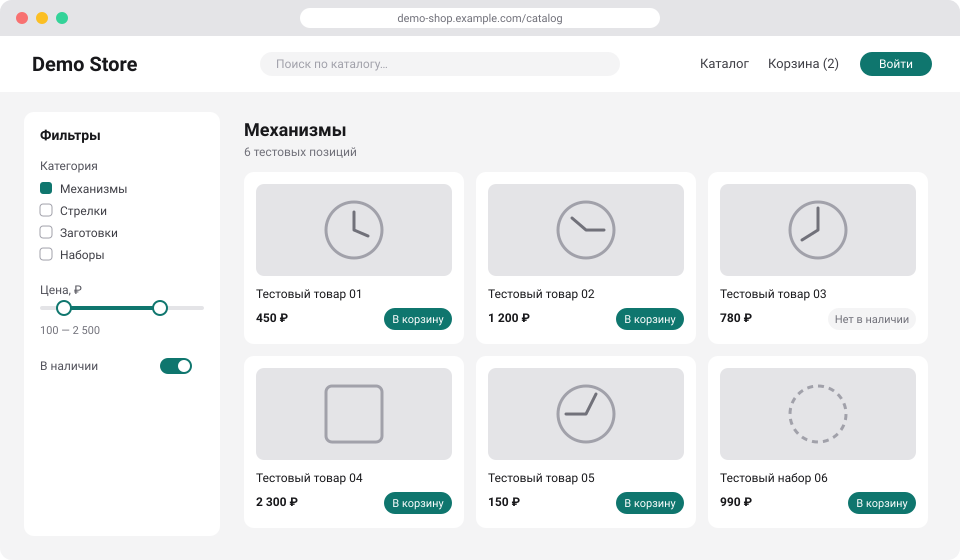
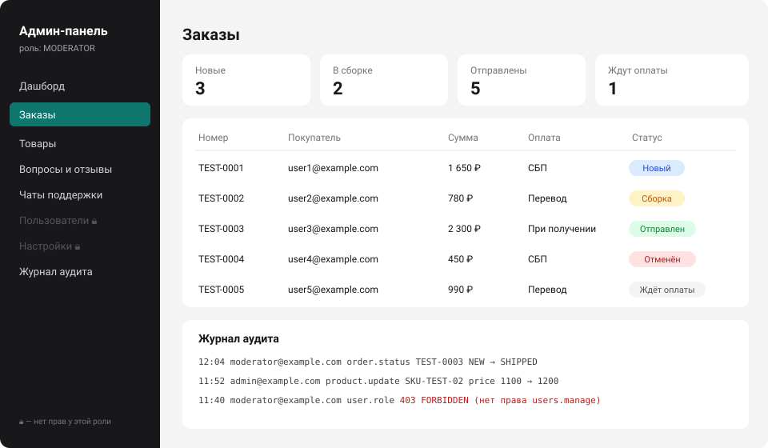
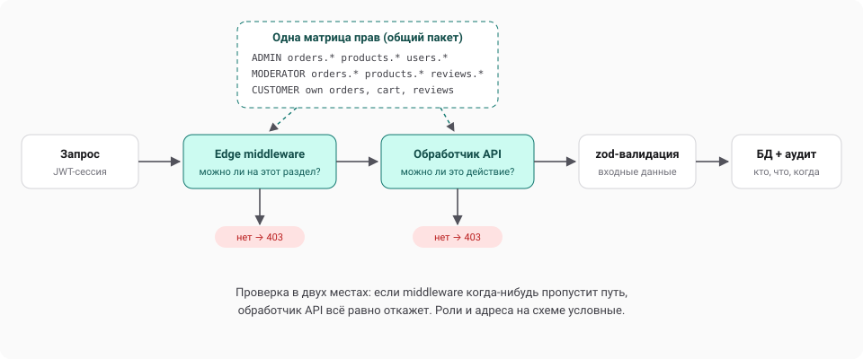

Интернет-магазин с панелями администратора и модератора
- Витрина, REST API, админка, чат поддержки, боты для двух мессенджеров; монорепозиторий с общим движком ботов.
- Аутентификация на JWT-сессиях, пароли в bcrypt, подтверждение e-mail и сброс пароля.
- Единая матрица прав (RBAC): проверяется и в Edge middleware, и в каждом обработчике API.
- Валидация всех входных данных через zod, журнал аудита действий администраторов.
- Коммерческий проект, код закрыт.





